The Impact of Demographic Changes on Economic Growth in Bulgaria (Research documentation)
Author
Stoycho Rusinov
Abstract
This study examines the demographic crisis in Bulgaria as a critical barrier to economic growth. By analyzing data from the past century, based on the Bulgarian Statistical Yearbook, we investigate the impact of demographic changes on Gross Domestic Product (GDP), capital, and its efficiency. An econometric evaluation of the factors influencing GDP is conducted using data spanning a broad time range to highlight the economic processes that have stimulated growth across three different political regimes in Bulgaria’s history.
The results indicate that, until the end of the socialist period, demographic growth was not the primary driver of economic progress due to the inefficient utilization of labor resources. However, following the transition, human capital began to play a decisive role in GDP dynamics, surpassing even gross capital investments. This shift raises a critical question: Can the declining population slow GDP growth to the extent that it triggers a recession and transforms the demographic crisis into a significant macroeconomic problem?
where \(\Delta Z_t=\frac{\Delta \mathrm{Hired}_t}{\mathrm{Hired}_{t-1}}-\frac{\Delta \mathrm{Hired}_{t-4}}{\mathrm{Hired}_{t-5}}\) и \(\Delta Z'_t=\frac{\Delta \mathrm{GDP}_t}{\mathrm{GDP}_{t-1}}-\frac{\Delta \mathrm{GDP}_{t-4}}{\mathrm{GDP}_{t-5}}\), which we perform to remove the temporal and cyclic dependencies in the data.
# Load necessary librarylibrary(dplyr)
Attaching package: 'dplyr'
The following objects are masked from 'package:stats':
filter, lag
The following objects are masked from 'package:base':
intersect, setdiff, setequal, union
library(stargazer)
Please cite as:
Hlavac, Marek (2022). stargazer: Well-Formatted Regression and Summary Statistics Tables.
R package version 5.2.3. https://CRAN.R-project.org/package=stargazer
# Create the differenced variable with NA padding for alignmentdata_stop_isty$diff_Hired_lag4 <-c(rep(NA, 4), diff(data_stop_isty$Hired, lag =4))data_stop_isty$diff_GDP <-c(rep(NA, 4), diff(data_stop_isty$GDP, lag =4))#Load the main OLS modeltime<-array()i<-0while (i<=111){if (i<=19){ time[i]<-1 } else {time[i]=0} i<-i+1}time2<-array()i <-0while (i <=111) {if (i >55&& i <60) { time2[i] <-1 } else { time2[i] <-0 } i <- i +1}model1_nohetero<-lm(diff_GDP~Compensation_of_Employees+Consumption_of_Fixed_Capital+diff_Hired_lag4, data=data_stop_isty[,-c(1,4,5,6,9)])model1_hetero<-lm(diff_GDP~Compensation_of_Employees+Consumption_of_Fixed_Capital+diff_Hired_lag4+time+time2, data=data_stop_isty[,-c(1,4,5,6,9)])library(sandwich)robust_se <-vcovHC(model1_hetero, type ="HC")# Use robust standard errors in model summarieslibrary(lmtest)
Loading required package: zoo
Attaching package: 'zoo'
The following objects are masked from 'package:base':
as.Date, as.Date.numeric
coeftest(model1_hetero, vcov = robust_se)
t test of coefficients:
Estimate Std. Error t value Pr(>|t|)
(Intercept) 0.0018078 0.0032556 0.5553 0.57993
Compensation_of_Employees -0.1349774 0.0497436 -2.7135 0.00783 **
Consumption_of_Fixed_Capital 0.1305425 0.0501660 2.6022 0.01065 *
diff_Hired_lag4 0.7369094 0.3221788 2.2873 0.02427 *
time -0.0250509 0.0164764 -1.5204 0.13153
time2 -0.0118216 0.0162552 -0.7272 0.46876
---
Signif. codes: 0 '***' 0.001 '**' 0.01 '*' 0.05 '.' 0.1 ' ' 1
The graph of the differenced GDP is:
options(warn=-1)plot(seq(1:111),data_stop_isty$diff_GDP, type="l", main="Изменения на диференцираното БВП с два и четири лагови стойности.", xlab="Период в тримесечия", ylab="Изменения в БВП")
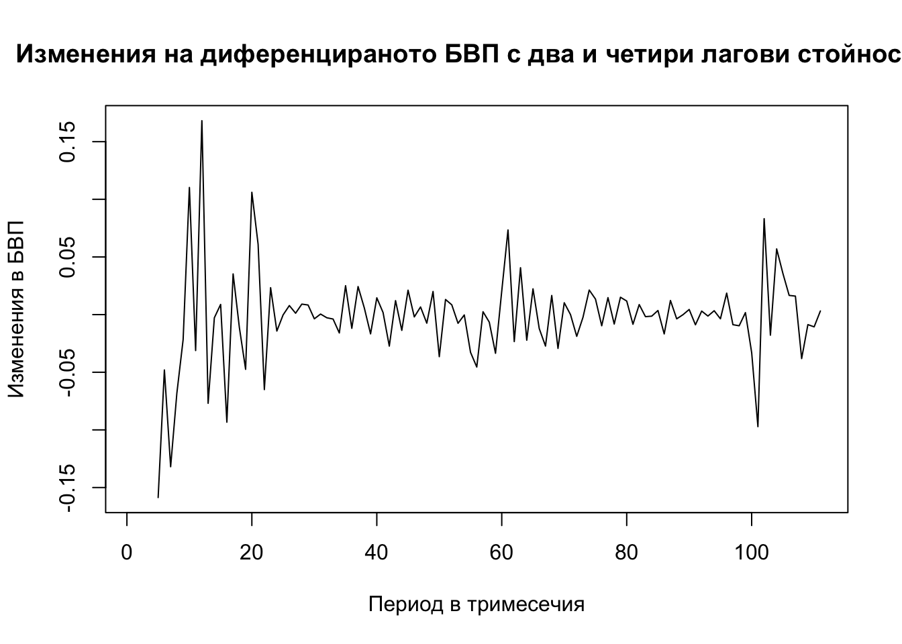
Perform ADF tests on the all variables to insure they fit the requirements of the Granger test and linear regression modelling (so are statinary):
suppressWarnings({library(tseries)columns_to_test <-c("Compensation_of_Employees", "Consumption_of_Fixed_Capital", "diff_Hired_lag4")adf_results <-list()for (col in columns_to_test) { data_to_test <-na.omit(data_stop_isty[[col]]) adf_results[[col]] <-adf.test(data_to_test)}# Extract ADF statistic, p-value, and other resultsfor (col in columns_to_test) {cat("Results for:", col, "\n")cat("ADF Test Statistic:", adf_results[[col]]$statistic, "\n")cat("P-value:", adf_results[[col]]$p.value, "\n")cat("Alternative Hypothesis:", adf_results[[col]]$alternative, "\n")cat("-----------------------------\n")}rm(data_to_test)})
Registered S3 method overwritten by 'quantmod':
method from
as.zoo.data.frame zoo
Results for: Compensation_of_Employees
ADF Test Statistic: -4.718769
P-value: 0.01
Alternative Hypothesis: stationary
-----------------------------
Results for: Consumption_of_Fixed_Capital
ADF Test Statistic: -3.918727
P-value: 0.01571905
Alternative Hypothesis: stationary
-----------------------------
Results for: diff_Hired_lag4
ADF Test Statistic: -6.478495
P-value: 0.01
Alternative Hypothesis: stationary
-----------------------------
Due to the low \(R^2\) we will perform the RESET test to check for omitted variables:
Perform tests for heteroscedasticity, and DW test on residuals to insure they fit the axioms of linear regression and then print the auto correlation table:
Durbin-Watson test
data: model1_nohetero
DW = 2.327, p-value = 0.9541
alternative hypothesis: true autocorrelation is greater than 0
bptest(model1_nohetero, studentize =TRUE)
studentized Breusch-Pagan test
data: model1_nohetero
BP = 3.1872, df = 3, p-value = 0.3636
acf(model1_hetero$residuals, main="Автокорелограма на остатъчните грешки в линейната регресия")
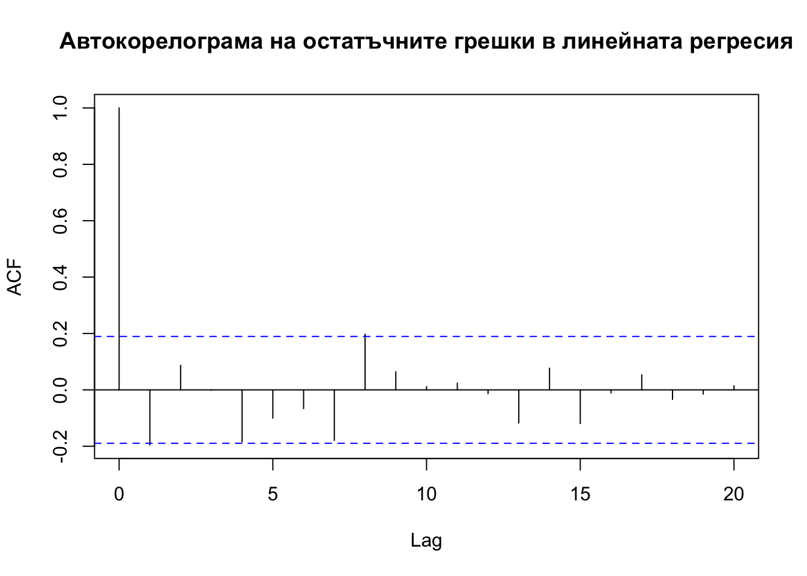
No autocorrelation was detected, as evidenced by the autocorrelation table, which shows that the structure of the lagged error terms is adequate for further reliability assurance. However, due to the model’s low predictive power, the Breusch-Pagan (BP) test suggests the presence of heteroscedasticity in the error terms, which is expected. To meet the package requirements for other regression models, we need to adjust the lengths of the dummy variables accordinglly, we do this by utilizing a while woop, to construct a dummy variable:
rm(time)rm(time2)time<-array()time2<-array()i=0while (i<=106){if (i<=19){ time[i]=1 } else {time[i]=0} i=i+1}time2<-array()i <-1while (i <=106) {if (i >55&& i <60) { time2[i] <-1 } else { time2[i] <-0 } i <- i +1}
Fit robust regression model for comparison:
options(warn=-1)library(MASS)
Attaching package: 'MASS'
The following object is masked from 'package:dplyr':
select
studentized Breusch-Pagan test
data: robust_model
BP = 3.1872, df = 3, p-value = 0.3636
Fit a general linear model to use the maximum likelihood estimator instead of OLS for comparison.
options(warn =-1)library(dplyr)library(stargazer)# Fit the model using glmmTMBmodel_general_lenear <-glm(diff_GDP ~ Compensation_of_Employees + Consumption_of_Fixed_Capital + diff_Hired_lag4 , data = data_stop_isty, family =gaussian())predicted_values_GLM <-predict(model_general_lenear, newdata =na.omit(data_stop_isty[, -c(1, 4, 5, 6, 9)]))#calculate r squared manually and then print the resultSST <-sum((data_stop_isty$diff_GDP -mean(data_stop_isty$diff_GDP))^2)SSE <-sum((data_stop_isty$diff_GDP - predicted_values_GLM)^2)r_squared <-1- (SSE / SST)print(paste0("R squared is = ", round(r_squared, digits =2)))
We will perform tests for heteroscedasticity and autocorrelation of the residuals for the glm to access the reliability of this model:
bptest(model_general_lenear)
studentized Breusch-Pagan test
data: model_general_lenear
BP = 3.1872, df = 3, p-value = 0.3636
dwtest(model_general_lenear)
Durbin-Watson test
data: model_general_lenear
DW = 2.327, p-value = 0.9541
alternative hypothesis: true autocorrelation is greater than 0
shapiro.test(model_general_lenear$residuals)
Shapiro-Wilk normality test
data: model_general_lenear$residuals
W = 0.9666, p-value = 0.008544
Based on the QQ plot, the residuals of the model appear to be approximately normal with the exception of some slight deviations in the tails of the distribution:
qqnorm(model_general_lenear$residuals)qqline(model_general_lenear$residuals, col ="blue")
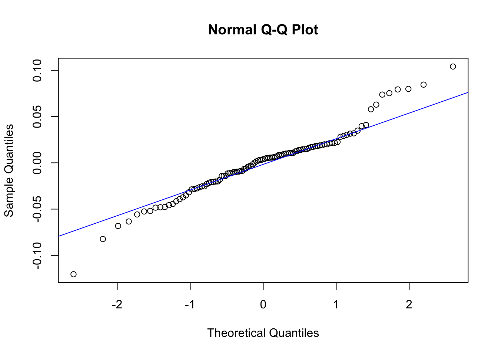
Since the pseudo r-squared is quite low in the gaussian model and the robust model, we can perform the Generalized additive model, with splain functions of the following type: \[
S(x) =
\begin{cases}
a_1 + b_1(x - x_1) + c_1(x - x_1)^2 + d_1(x - x_1)^3 & \text{for } x_1 \leq x < x_2 \\
a_2 + b_2(x - x_2) + c_2(x - x_2)^2 + d_2(x - x_2)^3 & \text{for } x_2 \leq x < x_3 \\
\vdots \\
a_n + b_n(x - x_n) + c_n(x - x_n)^2 + d_n(x - x_n)^3 & \text{for } x_{n-1} \leq x \leq x_n
\end{cases}
\] To determine whether there are significant non-linear realtionships in the data, that are measured with “wigly” curves. The general form of GAM with splain is given by: \[
S(x)=\sum_{i=1}^N\alpha_i\phi_i(x)
\] Where \(\alpha_i\) are the coefficients of the spline and \(\phi_i\) are the basis functions. The approximation of such model will insure that the non-linear relationships in the, if any, are adequately captured by the model. The leftover unexplained variance will be attributed to factors outside the scope of this approximation.
# Load the packagelibrary(mgcv)
Loading required package: nlme
Attaching package: 'nlme'
The following object is masked from 'package:dplyr':
collapse
This is mgcv 1.9-0. For overview type 'help("mgcv-package")'.
# Generalized Additive Modelmodel_gam <-gam(diff_GDP ~s(Compensation_of_Employees) +s(Consumption_of_Fixed_Capital) +s(diff_Hired_lag4), data = data_stop_isty, family =gaussian())summary(model_gam)
We provide a plot of the components of this gamma model:
plot(model_gam)
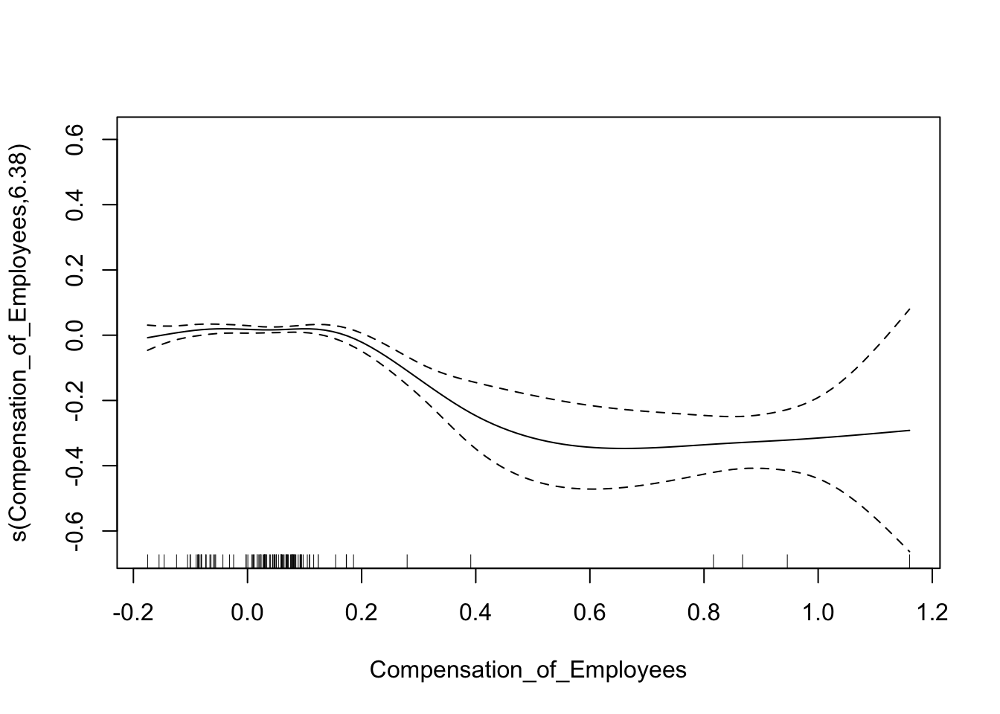
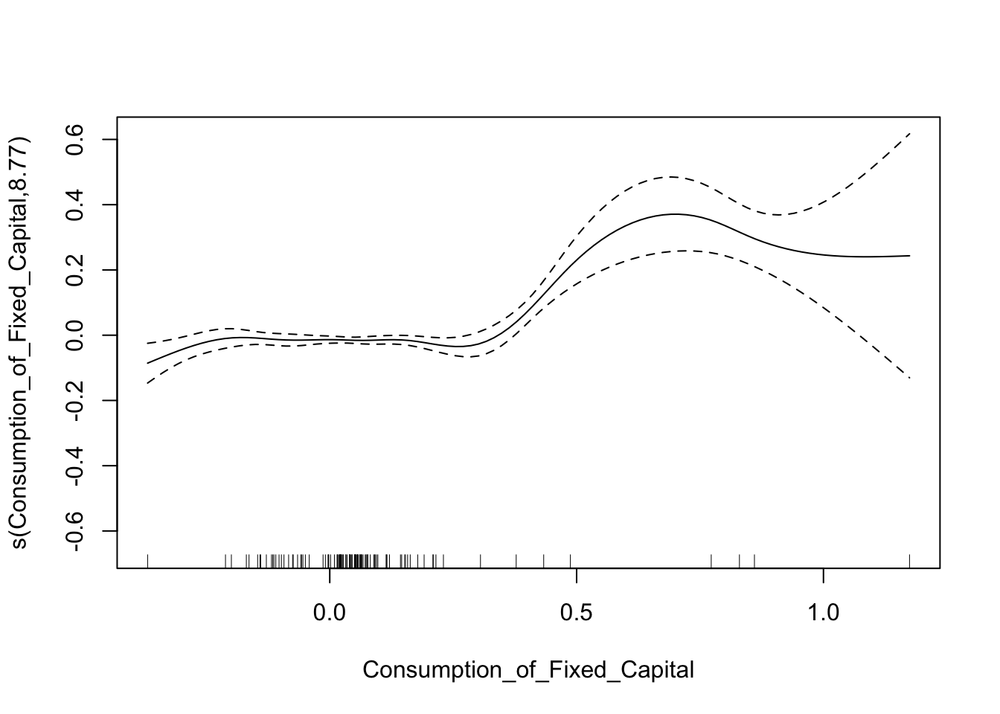
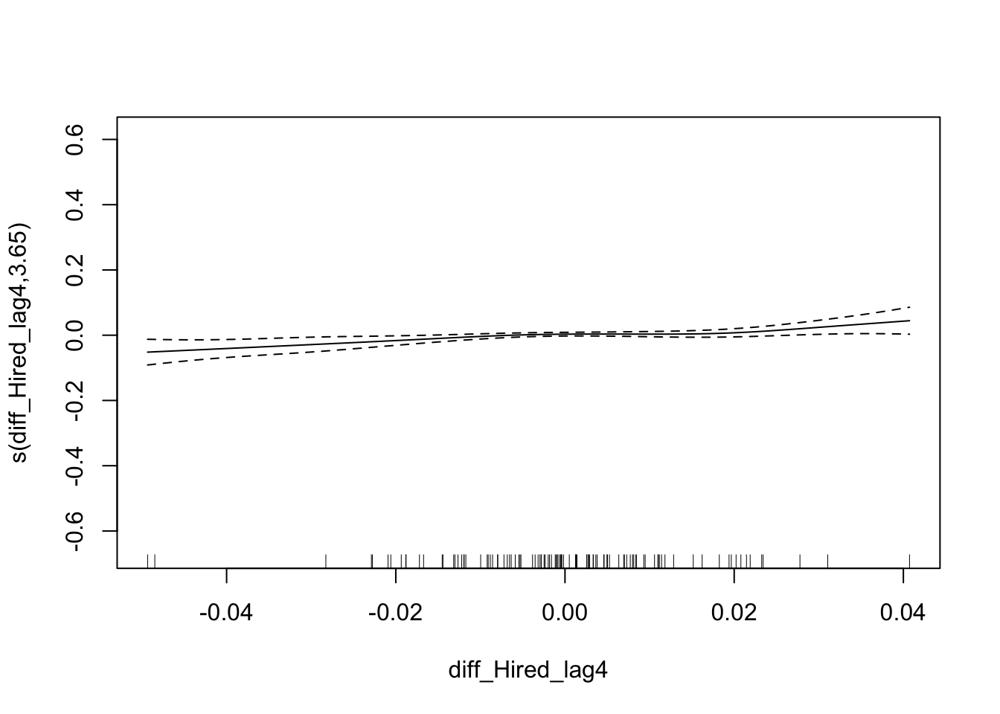
Now, we will derive the relative deviance explained by each parameter in the GAM model:
compensation<-gam(diff_GDP ~s(Compensation_of_Employees), data = data_stop_isty, family =gaussian())employees<-gam(diff_GDP ~s(diff_Hired_lag4), data = data_stop_isty, family =gaussian())capital<-gam(diff_GDP ~s(Consumption_of_Fixed_Capital), data = data_stop_isty, family =gaussian())cat("Deviance explained by the relative change in employed compensation:", summary(compensation)$dev.expl,"\n")
Deviance explained by the relative change in employed compensation: 0.08627241
cat("Deviance explained by relative change in employed:",summary(employees)$dev.expl, "\n")
Deviance explained by relative change in employed: 0.1319314
cat("Deviance explained by relative change in employed:",summary(capital)$dev.expl, "\n")
Deviance explained by relative change in employed: 0.0449725
#Create a vector of fitted values for this model to compare with the real datapredicted_values_GAM<-model_gam$fitted.values
From we can easily observe that the relative change of the employed persons explaines higher percentage of the deviance in GDP.
# Create a plot for predicted valuesplot( predicted_values_GAM, type ="l", col ="blue", xlab ="Месеци след 1995 година", ylab ="Отн. изменения", main ="Прогнозирани vs. реални стойности в измененията на БВП")# Add the actual values to the same plotlines( data_stop_isty$diff_GDP, col ="black")# Add a legend to differentiate between predicted and actual valueslegend("topright", legend =c("Прогноза (GAM)", "Реални стойности"), col =c("blue", "black"), lty =1)
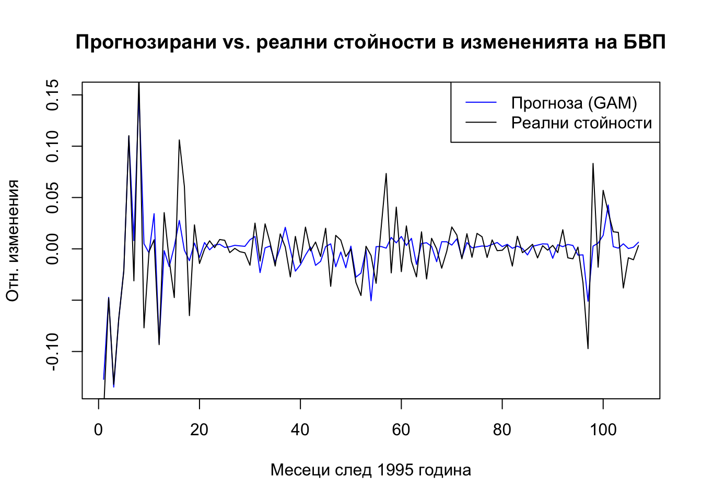
Upon the statistical realization of the second mentioned in the beggining of the research paper we will mention the augmented Solow model, by beginning with the initial definition of the production function in the main Solow model: \[
Y=A\cdot F(K,Z\cdot N)
\] Where \(N\) is the number of workers employed in the economy and Z is their productivity. \(K\) represents the capital accumulation. Except for the technological progress every other parameter in the above equation is defined in a series of equatins: \[
K_t=I_t+(1-\delta)\cdot K_{t-1},
\]\[
𝑁_𝑡=(1+𝑛)\cdot 𝑁_{𝑡−1},
\]\[
𝑍_𝑡=(1+𝜔) \cdot 𝑍_{𝑡−1}
\] In this model, the parameter $ $ denotes the rate of improvement in labor productivity over time. The model posits that technological progress is continuously advancing, thereby amplifying the impact of the population parameter on GDP development. Specifically, $ $ captures the rate at which labor productivity enhances, reflecting ongoing technological advancements.The parameter $ n $ represents the rate of population growth. While $ n $ typically increases, it is projected to decline in Bulgaria due to the ongoing demographic crisis. This demographic shift alters the conventional expectations regarding population dynamics and their influence on GDP growth. For the purposes of this approximation we will assume that the combined term \((1+𝜔)(1+𝑛)\cdot 𝑍_{𝑡−1}𝑁_{𝑡−1}\) is identically equal to the working population (employed + self-employed). We as well assume that the quantity \(K_t=I_t+(1-\delta)\cdot K_{t-1}\) is equal to the “brute capital investments” as refered to by the National Statics institute.From here we have the following form of the equation: \[
Y(K_t,L_t)=AK_t^\alpha L_t^\beta
\] The log form of the equation above is given by: \[
\ln (Y_t)=\ln(A)+\alpha\cdot\ln(K_t)+\beta\cdot\ln(L_t)
\] Given the model specification, there may be issues related to the potential lack of stationarity and the presence of autocorrelation in the residuals of the regression model. To address these concerns, it is essential to examine whether the time series data for the variables in the model exhibit non-stationary behavior or if the residuals are auto-correlated.
Non-stationarity can lead to unreliable estimates and misleading inferences, while autocorrelation in residuals can indicate that the model does not fully capture the dynamics of the data.
To correct for these issues, we can apply the disintegration method. This approach involves transforming the variables to obtain their relative changes, which helps to mitigate problems associated with non-stationarity and autocorrelation. By focusing on the relative changes, we can enhance the robustness of the regression analysis and obtain more reliable estimates.To do this take the difference \(\Delta\) on both sides of the last equation: \[
\Delta \underbrace{\ln (Y_t)}_{\ln\left(\frac{Y_t}{Y_{t-1}}\right)} = \ln(A)-\ln(A)+\alpha\cdot (\underbrace{\ln(K_t)-\ln(K_{t-1})}_{\ln\left(\frac{K_t}{K_{t-1}}\right)})+\beta\cdot(\underbrace{\ln(L_t)-\ln(L_{t-1})}_{\ln\left(\frac{L_t}{L_{t-1}}\right)})
\] To begin with the statistical analysis we first import the data:
cat(sprintf(" - Number of Lags: %d\n", test.3$parameter))
- Number of Lags: 3
cat(sprintf(" - Alternative Hypothesis: %s\n\n", test.3$alternative))
- Alternative Hypothesis: stationary
The results however point towards the idea that the series are not stationary in the 95% confidence interval, however all of them appear to be stationary in the 90% confidence interval. Regardless of the discovered lack of stationarity the final model appears to be reasonable and except the heteroscedasticity no correlation had been discovered. GDP appears to be highly correlated with both variables but the variables themselves are not correlated, ruling out the possibility of multicolinearity. The tests are given here:
library(lmtest)bptest(model_CD)
studentized Breusch-Pagan test
data: model_CD
BP = 9.4826, df = 2, p-value = 0.008727
dwtest(model_CD)
Durbin-Watson test
data: model_CD
DW = 2.5172, p-value = 0.8928
alternative hypothesis: true autocorrelation is greater than 0
car::vif(model_CD)
Capital Labor
1.033143 1.033143
shapiro.test(residuals(model_CD))
Shapiro-Wilk normality test
data: residuals(model_CD)
W = 0.97221, p-value = 0.6409
The test detects possible hetersocedasticity but the residuals appear to be normally distributed and not autocorrelated. Heteroscedasticity causes most problems in the estimation of standard errors, so we will provide standard errors that account for heteroscedastic behavior by estimating the variance-covariance matrix, that is given below:
\(\mathbf{X}\) is the matrix of independent variables.
\(\mathbf{\Omega}\) is a diagonal matrix with the squared residuals as its diagonal elements, representing heteroscedasticity.
\(\hat{\boldsymbol{\beta}}\) is the vector of OLS estimates.
\(\text{Var}(\hat{\boldsymbol{\beta}})\) is the heteroscedasticity-consistent covariance matrix of \(\hat{\boldsymbol{\beta}}\).
The procedure is readily given below and the standard errors as well as p-values estimated:
# Calculate heteroscedasticity-consistent standard errors (Huber-White)library(sandwich)robust_se <-vcovHC(model_CD, type ="HC")# Use robust standard errors in model summarieslibrary(lmtest)coeftest(model_CD, vcov = robust_se)
t test of coefficients:
Estimate Std. Error t value Pr(>|t|)
(Intercept) 0.0289760 0.0058109 4.9865 3.860e-05 ***
Capital -0.0479410 0.0134683 -3.5595 0.00152 **
Labor 1.3668274 0.2701656 5.0592 3.198e-05 ***
---
Signif. codes: 0 '***' 0.001 '**' 0.01 '*' 0.05 '.' 0.1 ' ' 1
As seen from the table above all variables appear to still be statistically significant.
# Perform the ADF testslibrary(tseries)adf_gdp <-adf.test(new_data$GDP_growth)adf_pop <-adf.test(new_data$Population_growth,k=3)adf_birth <-adf.test(new_data$Birth_rate_growth,k=1)adf_birth2 <-adf.test(new_data$Birth_rate)print(adf_gdp)
Augmented Dickey-Fuller Test
data: new_data$GDP_growth
Dickey-Fuller = -4.0402, Lag order = 3, p-value = 0.01428
alternative hypothesis: stationary
print(adf_pop)
Augmented Dickey-Fuller Test
data: new_data$Population_growth
Dickey-Fuller = -3.8213, Lag order = 3, p-value = 0.02377
alternative hypothesis: stationary
print(adf_birth)
Augmented Dickey-Fuller Test
data: new_data$Birth_rate_growth
Dickey-Fuller = -4.4954, Lag order = 1, p-value = 0.01
alternative hypothesis: stationary
print(adf_birth2)
Augmented Dickey-Fuller Test
data: new_data$Birth_rate
Dickey-Fuller = -2.9812, Lag order = 3, p-value = 0.179
alternative hypothesis: stationary
Further evidence for the stationary character of the processes is given by the autocorrelation plots:
acf(new_data$GDP_growth)
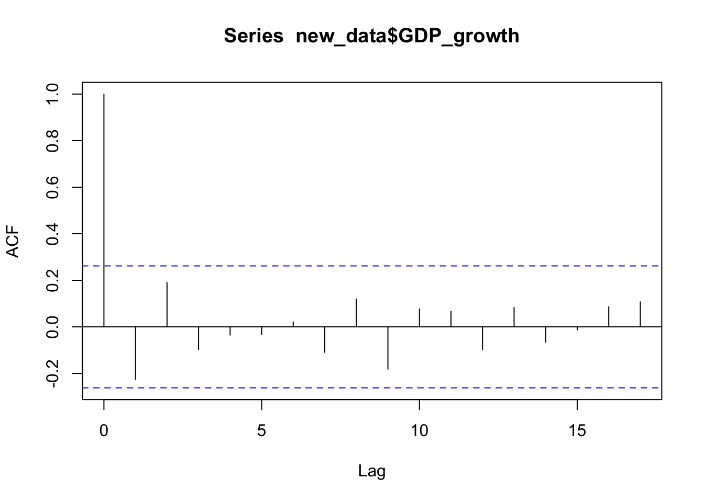
acf(new_data$Birth_rate_growth)
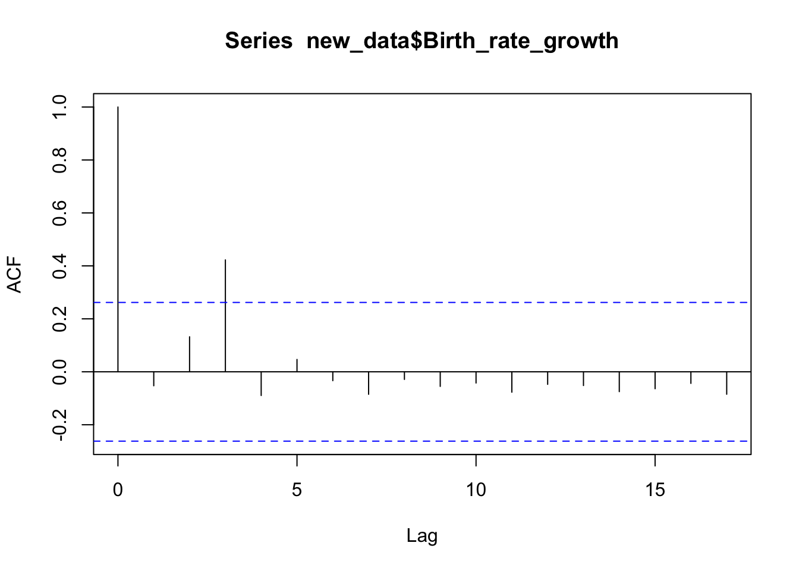
acf(new_data$Population_growth)
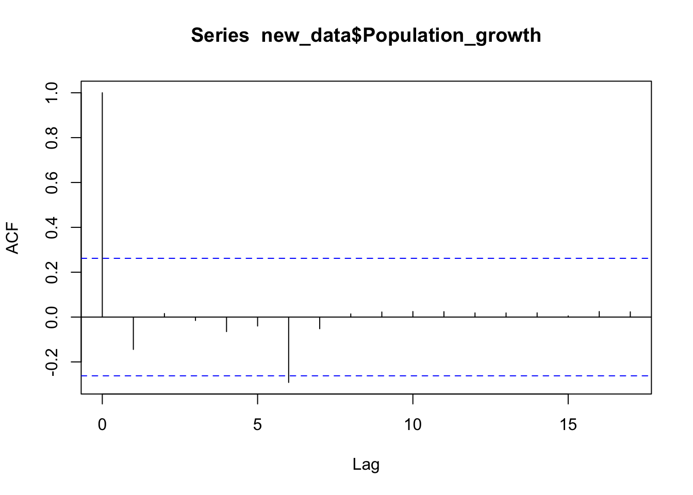
acf(new_data$Birth_rate)
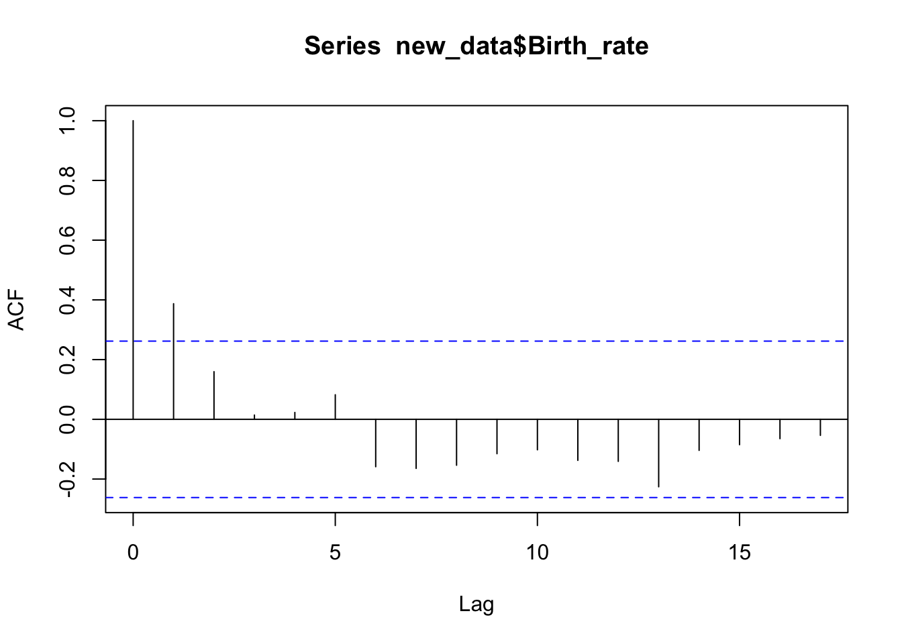
pacf(new_data$GDP_growth)
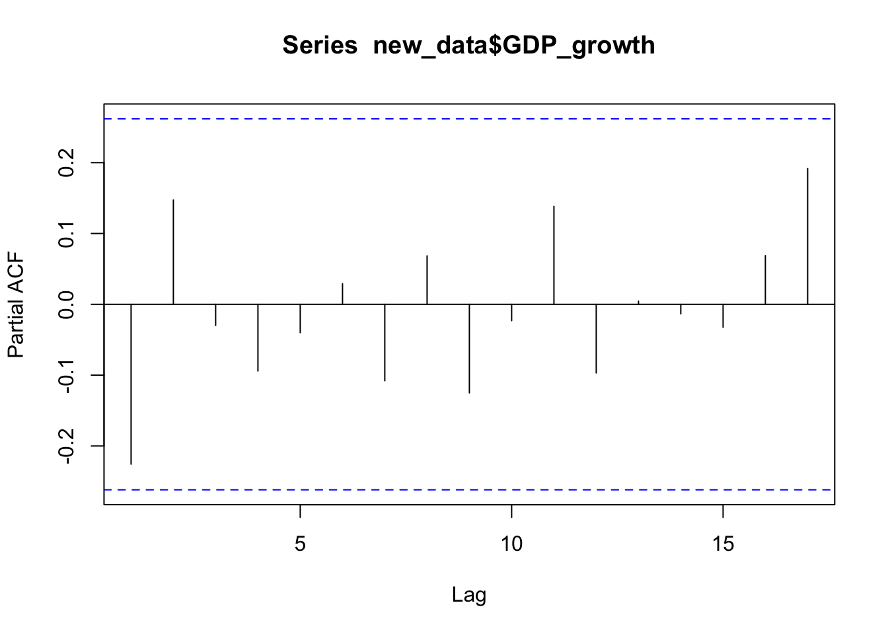
pacf(new_data$Birth_rate_growth)
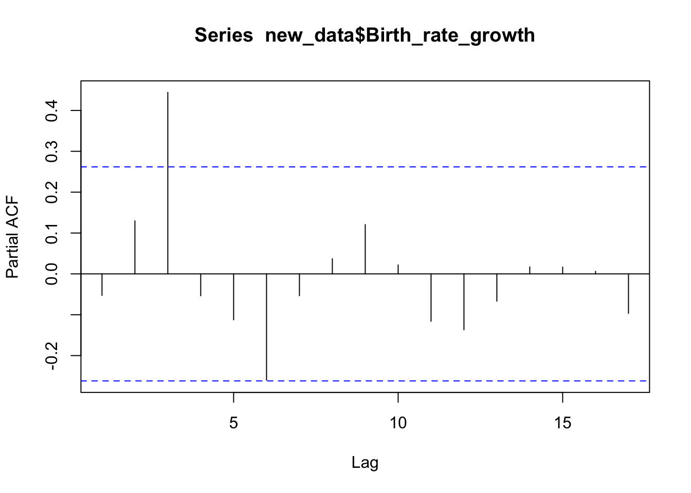
pacf(new_data$Population_growth)
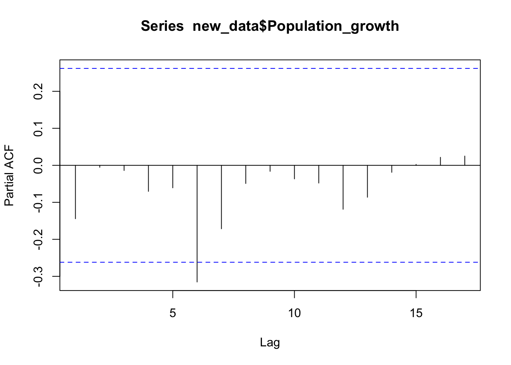
pacf(new_data$Birth_rate)
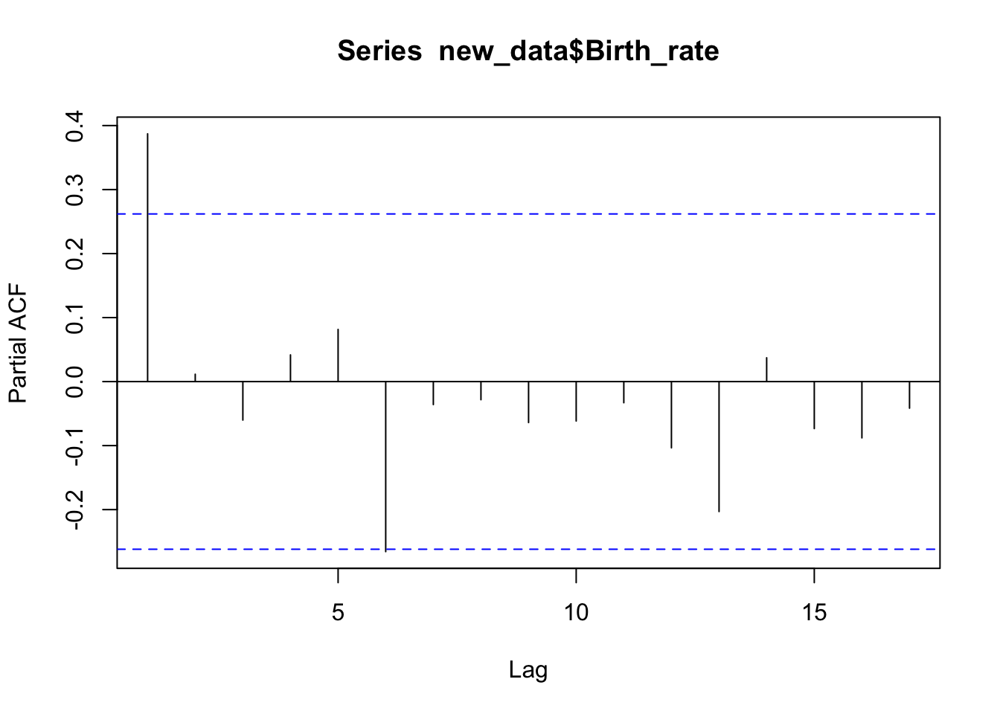
From where we can easily observe that only one difference was enough to insure the removal of any non-stationary process. This procedure allows us to asses the connections between GDP and the population growth by utilizing a correlation matrix:
From the correlation plot we observe a very small correlation between the population change (partially due to the approximation algorithms used by the national statistics institute). Now we will create dummy variable to account for the wars and economic crisis that Bulgaria have been facing during the period between 1888 to 1947:
i <-0wars<-array()while (i <57) {if (i >21&& i <25) { wars[i]<-1 }if (i >24&& i <30) { wars[i]<-1 }if (i >49&& i <56) { wars[i]<-1 } else wars[i]=0 i = i +1}new_data$wars<-wars
Lets recreate the correlation table with our new variable:
suppressWarnings({library(psych)corPlot(new_data, main="Корелограма на взаимовръзката между войните, БВП и населението")})
Attaching package: 'psych'
The following object is masked from 'package:car':
logit
# Breusch-Pagan test for heteroscedasticity in both modelsbptest(model)
studentized Breusch-Pagan test
data: model
BP = 3.7685, df = 3, p-value = 0.2876
bptest(model2) # For the linear model
studentized Breusch-Pagan test
data: model2
BP = 1.4204, df = 2, p-value = 0.4915
bptest(modeliv) # For the IV model
studentized Breusch-Pagan test
data: modeliv
BP = 8.3412, df = 1, p-value = 0.003876
# Breusch-Godfrey test for serial correlation in both modelsbgtest(model)
Breusch-Godfrey test for serial correlation of order up to 1
data: model
LM test = 1.9602, df = 1, p-value = 0.1615
bgtest(model2) # For the linear model
Breusch-Godfrey test for serial correlation of order up to 1
data: model2
LM test = 0.52992, df = 1, p-value = 0.4666
bgtest(modeliv) # For the IV model
Breusch-Godfrey test for serial correlation of order up to 1
data: modeliv
LM test = 0.65951, df = 1, p-value = 0.4167
# Shapiro-Wilk test for normality of residuals in both modelsshapiro.test(model$residuals) # For the linear model
Shapiro-Wilk normality test
data: model$residuals
W = 0.9566, p-value = 0.1932
shapiro.test(modeliv$residuals) # For the IV model
Shapiro-Wilk normality test
data: modeliv$residuals
W = 0.96106, p-value = 0.261
# Partial Autocorrelation Function (PACF) of residuals in both modelspacf(model$residuals) # For the linear model
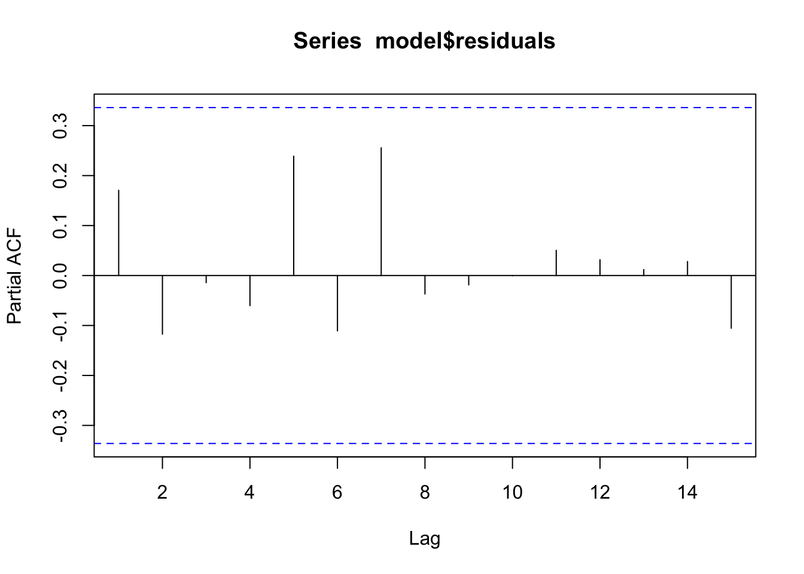
pacf(modeliv$residuals) # For the IV model
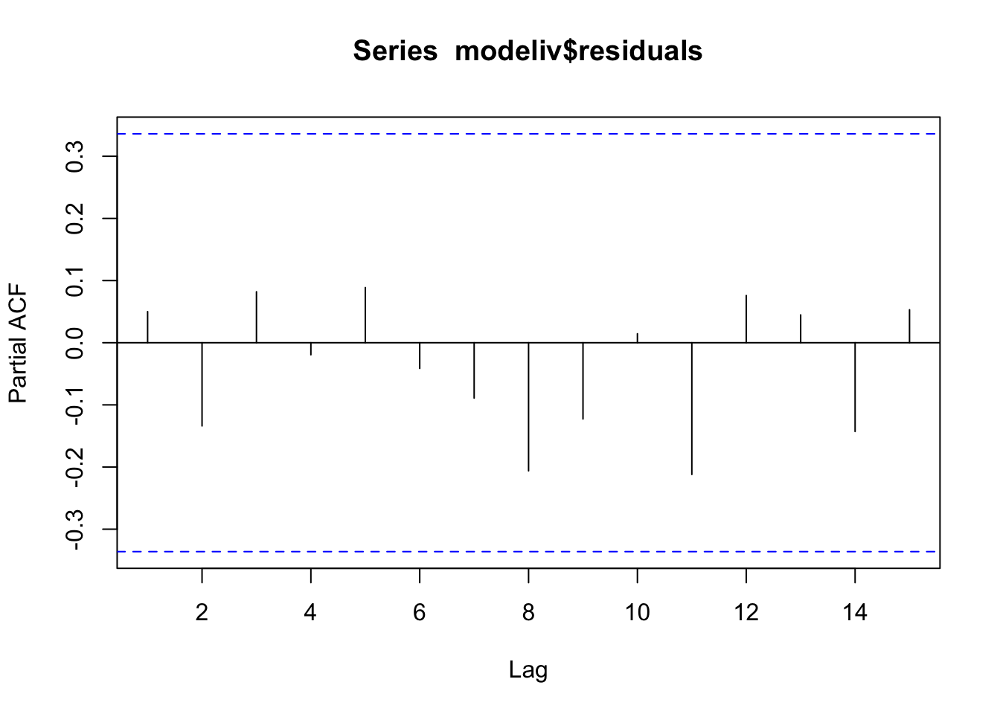
# Robust standard errors using heteroscedasticity-consistent (HC1) covariance matrix in the IV modelcoeftest(modeliv, vcov =vcovHC(modeliv, type ="HC1"))
t test of coefficients:
Estimate Std. Error t value Pr(>|t|)
(Intercept) 0.0420166 0.0076003 5.5283 4.27e-06 ***
Workers_diff 0.7781545 0.2171247 3.5839 0.001109 **
---
Signif. codes: 0 '***' 0.001 '**' 0.01 '*' 0.05 '.' 0.1 ' ' 1